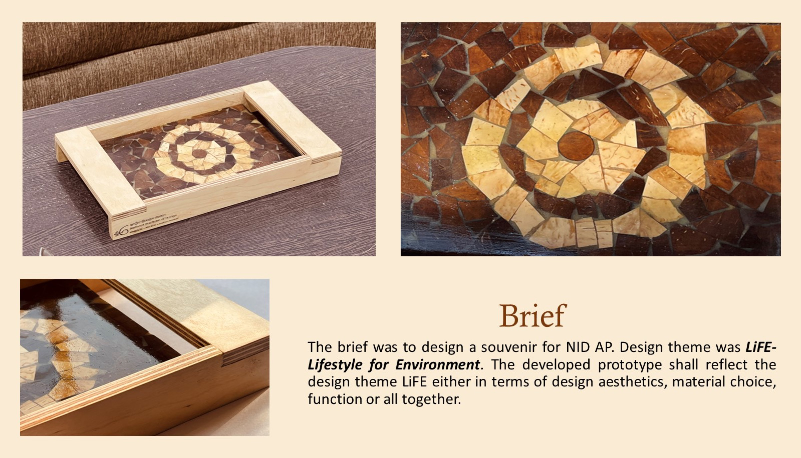
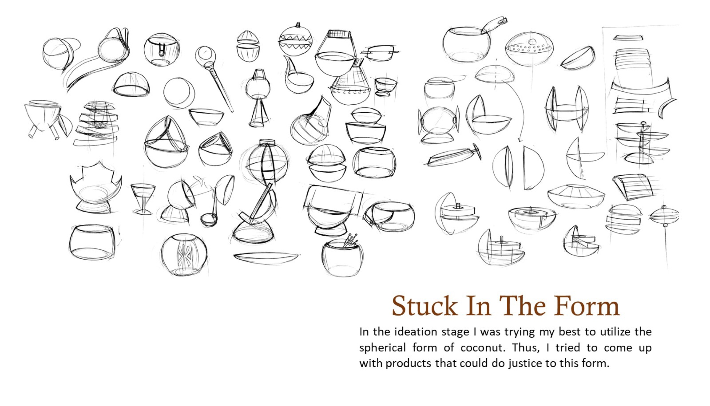
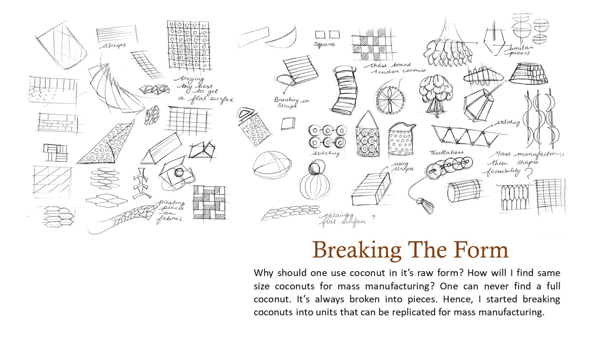
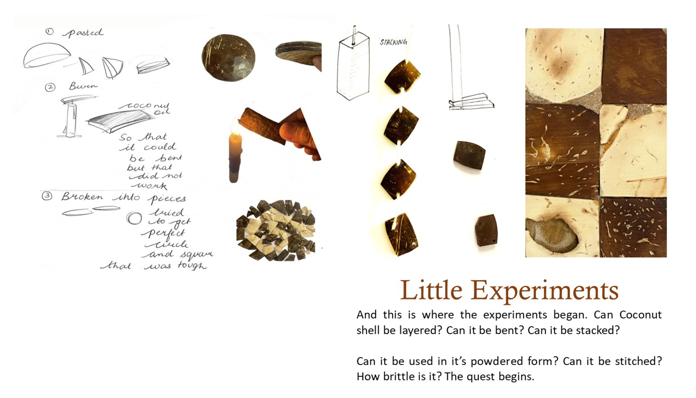
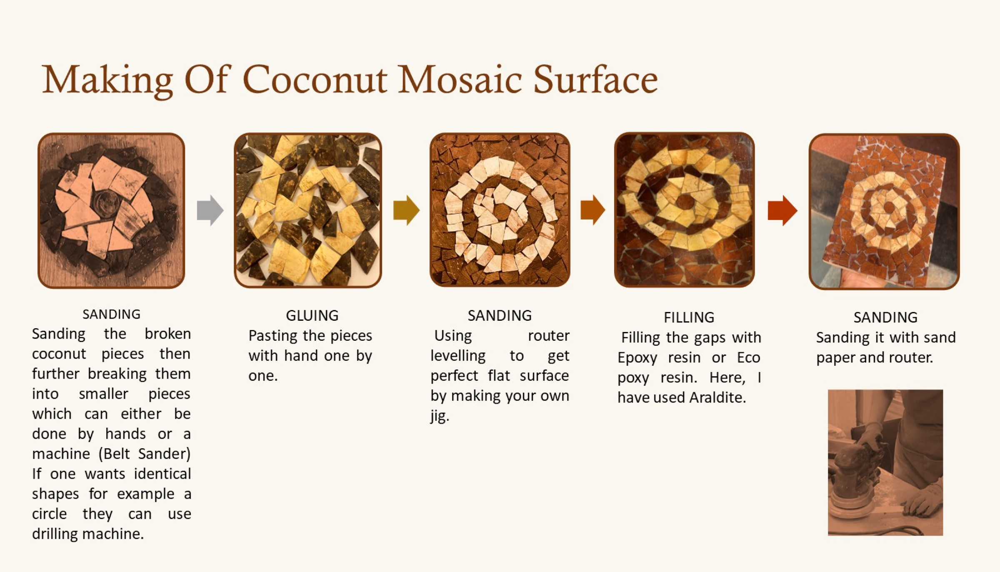
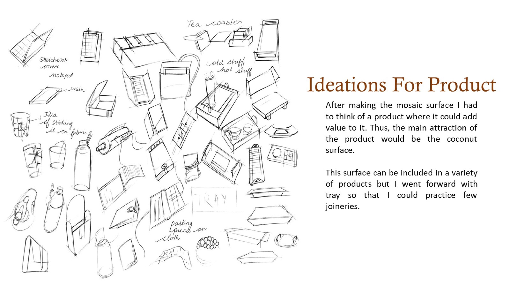
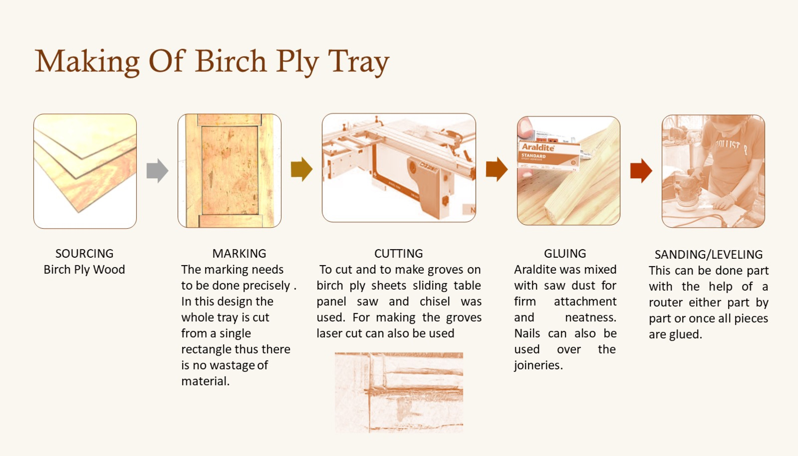
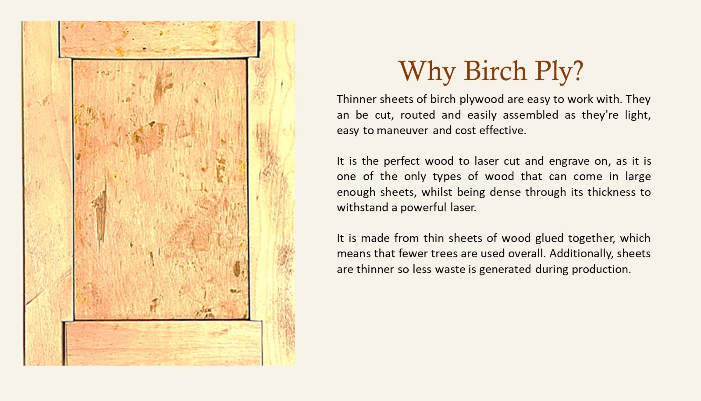
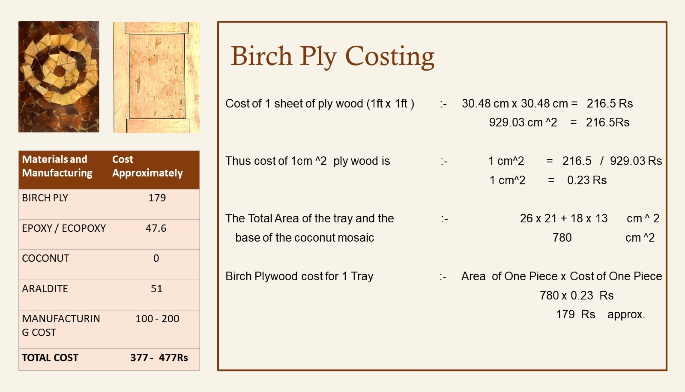
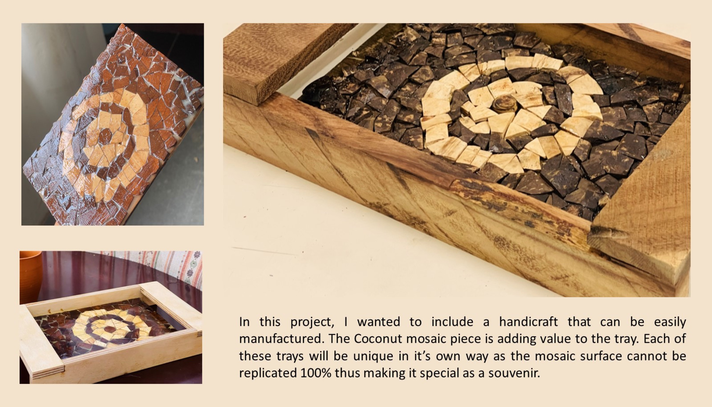

A souvenir for NID Andhra Pradesh. Upcycled coconut shell, broken into a mosaic and set into a birch plywood tray.
The brief: design a souvenir for NID AP under the theme LiFE, Lifestyle for Environment, in aesthetics, material, function or all together. Three weeks, guided by EVS Kiran Kumar.
Upcycling coconut shells reduces waste, conserves resources and supports local economies. Choosing coconut products supports artisans and reduces the strain on the planet.


At first I tried to keep the spherical form of the coconut. But a full coconut is never the same size, and it always breaks. So I started breaking it into units that could be repeated.
Then the experiments began: can coconut shell be layered, bent, stacked, powdered or stitched? How brittle is it?



Sanding the broken pieces into smaller ones, gluing them by hand, levelling with a router on a jig I made, filling the gaps with Araldite and sanding it smooth.

The surface could go on many products, but I chose a tray so I could practise a few joineries.
Birch plywood is thin, easy to cut, route and engrave, light, cost-effective and makes less waste.




About ₹377 to ₹477 per tray, including birch ply, epoxy and manufacturing. The coconut costs nothing.

Each tray is unique: the mosaic can never be replicated exactly, which makes it special as a souvenir.

